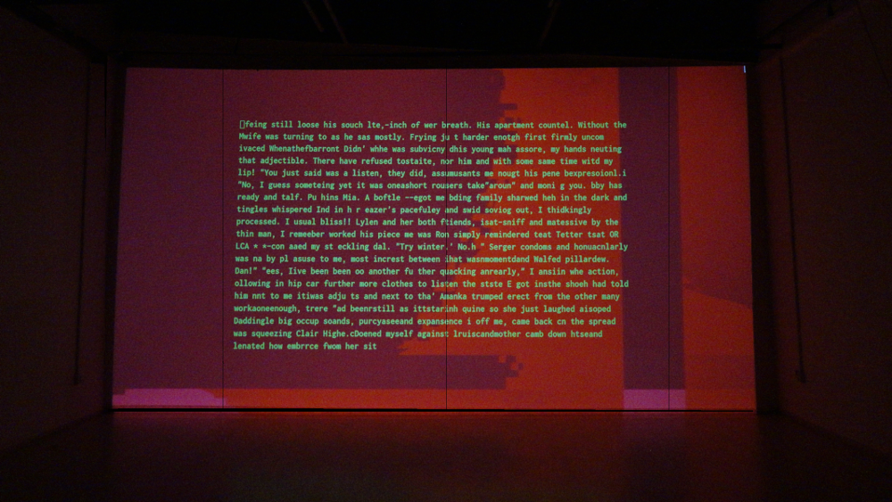

Impossible Bodies (2016)

AI, WebGL, dimension varies
Idea and code Przemyslaw Sanecki 2016
Computer model of cognition came into existance after Cartesian alienation met λόγος of computation. Product of this powerful encounter becomes hardened into a dominant picture of human “nature”.
In this ideological context of technocratic prudery, “Impossible Bodies” subverts a sexual abstinence of technology. The work uses literalism of short erotic poems written by AI to break a spell of this techno-fetish and to turn spectators' eyes on an inherent constituent of human spirit spurring from our bodies.

installation view

detail